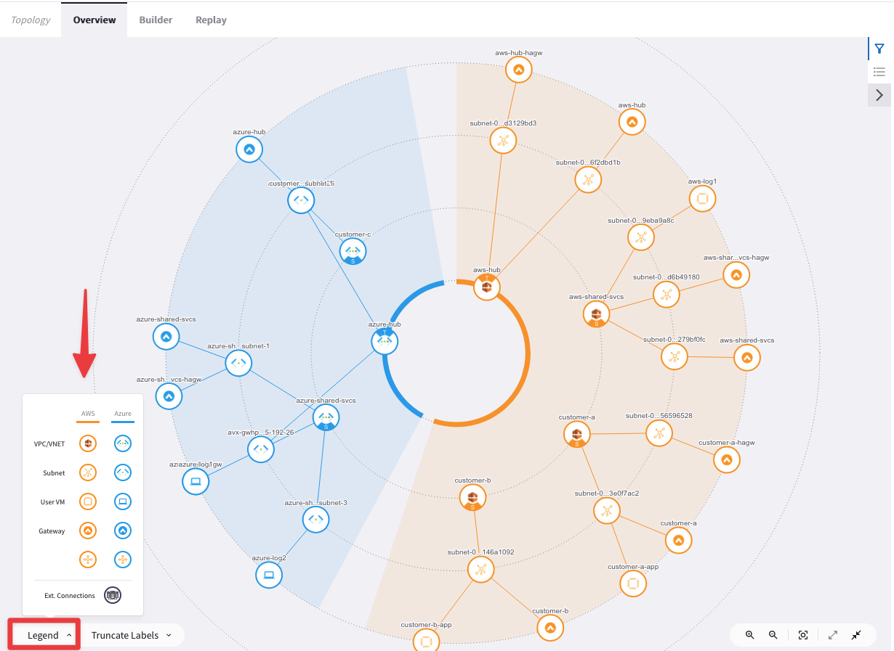
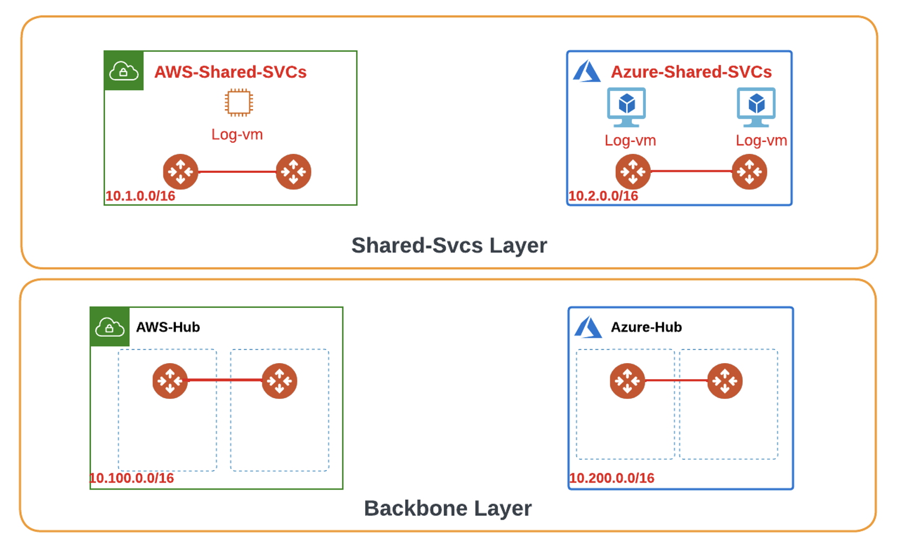
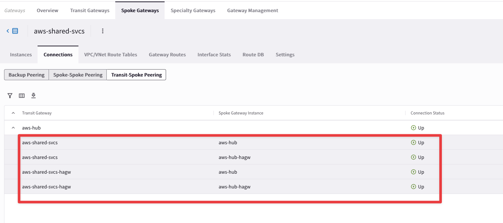
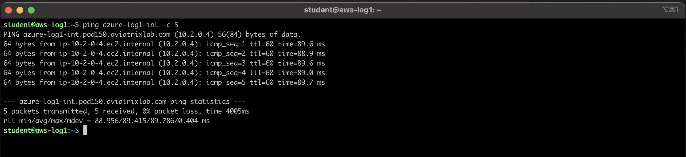
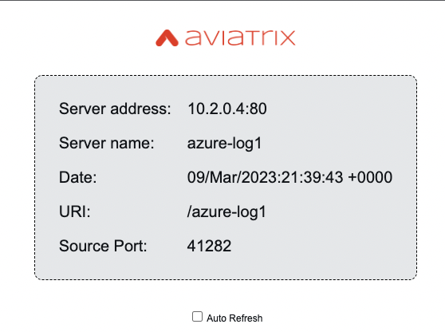

Lab 1 - Build the MSP Backbone#
1.0 - What is in the lab?#
This is an advanced scenario for Managed Service Providers (MSPs) that goes through onboarding Tenants, connecting to their respective locations, overlapping addresses and much more.
Note
The initial lab topology can be found below and consists of:
Shared Services spread across AWS & Azure with their respective Spoke Gateways.
Backbone layer spread across AWS & Azure. The PAN FWs have already been pre-built in AWS. In a subsequent lab, you will be building the same within Azure.
3 Separate Tenants (customers-a, b and c). Customers in tandem with the MSPs can host their applications and services within their dedicated & isolated space. Though we represent each customer with a single VPC, in reality the same design can scale to cater multiple VPCs, Regions, and Accounts.
Customer Locations: These represent locations outside the Public Cloud(s) that need connectivity to the applications and services within the Public Cloud(s).
There are workloads spread across the topology running an NGINX server & proxy which will be used to test end to end connectivity.
 Figure 1: Lab Overview
Figure 1: Lab Overview
1.1 - Initial Topology#
Go to CoPilot > Settings > Resources > Task Server
Ensure that both Fetch GW Routes and Fetch VPC Routes intervals are set to “1 second” each and then click on SAVE.
 Figure 2: Task Server
Figure 2: Task Server
 Figure 3: Fetch GW Routes
Figure 3: Fetch GW Routes
 Figure 4: Fetch VPC Routes
Figure 4: Fetch VPC Routes
Afterwards, click on Commit.
 Figure 5: Commit
Figure 5: Commit
Warning
These are very aggressive settings. In a Production environment, you should not set these intervals that frequently!
Let’s visit our Topology page within CoPilot by leveraging the Search Bar as shown below.
 Figure 6: Using the Search Bar
Figure 6: Using the Search Bar
Click on the Legend button in order to get a drop-down window with all the icon simbols.
Figure 7: Topology Legend
1.2 - Build the MSP Backbone#
Having looked at the initial overall topology we will focusing on the Transit Core Backbone area for this lab. The initial status of the backbone area is as shown here.
Pairs of gateways of the same flavor (i.e. either Transit or Spoke gateways) have the inter-link auto generated by the Controller (this attachment has a metric of 200).
The peerings between the pair of Transit GWs and the attachments between the Spoke GWs and their corresponding Transit GWs need to be deployed.
Figure 8: Initial Backbone
1.2.1 - Connect AWS Shared SVCs to AWS Hub#
Establish the attachments between the Spoke Gateways and the Transit Gateways in AWS.
Tip
Go to CoPilot > Cloud Fabric > Gateways > Spoke Gateways and select the aws-shared-svcs GWs cluster and then click on the pencil icon for editing that specific cluster.
 Figure 9: Edit the Spoke GW in AWS
Figure 9: Edit the Spoke GW in AWS
Tip
Click on the “Attach to Transit Gateway” drop-down window and select the aws-hub GW and then click on Save.
 Figure 10: Select aws-hub for establishing the peering
Figure 10: Select aws-hub for establishing the peering
1.2.2 - Connect Azure Shared SVCs to Azure Hub#
Establish the attachments between the Spoke Gateways and the Transit Gateways in Azure.
Tip
Go to CoPilot > Cloud Fabric > Gateways > Spoke Gateways and select this time the azure-shared-svcs GWs cluster and then click on the pencil icon for editing that specific cluster.
 Figure 11: Edit the Spoke GW in Azure
Figure 11: Edit the Spoke GW in Azure
Tip
Click on the “Attach to Transit Gateway” drop-down window and select the azure-hub GW and then click on Save.
 Figure 12: Select azure-hub for establishing the peering
Figure 12: Select azure-hub for establishing the peering
1.2.3 - Configure Transit Peering between AWS & Azure#
Establish the peerings between the Transit Gateways in AWS and the Transit Gateways in Azure.
Tip
Go to CoPilot > Cloud Fabric > Gateways > Transit Gateways and select the aws-hub GWs cluster and then click on the pencil icon for editing that specific cluster.
 Figure 13: Edit AWS Hub Transits
Figure 13: Edit AWS Hub Transits
Tip
Click on the “Peer to Transit Gateway” drop-down window and select the azure-hub GW and then click on Save.
 Figure 14: Select azure-hub for establishing the peering
Figure 14: Select azure-hub for establishing the peering
1.3 - Verification of Attachments & Peerings#
Verify the aws-shared-svcs Spoke Cluster.
Tip
Go to CoPilot > Cloud Fabric > Gateways > Spoke Gateways, select the aws-shared-svcs Spoke GWs cluster and then select the Connections TAB.
Check the Backup peering (default tab). You will notice one single peering between the aws-shared-svcs GW and the aws-shared-svcs-hagw GW.
Note
This peering is auto generated by the Aviatrix Controller.
 Figure 15: The Backup Peering
Figure 15: The Backup Peering
Check the Transit-Spoke peering tab. You will notice four peerings between the aws-hub GWs Cluster and the azure-hub GWs Cluster.
Figure 16: AWS & Azure Hub Peering Verification
Check the Topology.
Note
Go to CoPilot > Topology > Overview (default TAB).
 Figure 17: Topology Verification
Figure 17: Topology Verification
At this point, this is how the overall topology would look like:
 Figure 18: Current State of the Topology
Figure 18: Current State of the Topology
1.4 Data Plane Verification#
Retrieve the IP address.
 Figure 16: Find Instance IP Address
Figure 16: Find Instance IP Address
Figure 17: Ping Verification
 Figure 18: Access aws-log1 Application
Figure 18: Access aws-log1 Application
Figure 19: Verification Leveraging NGINX Proxy
1.5 - Conclusion#
In this lab, we have built our MSP backbone layer and ensured end to end connectivity across the MSP.